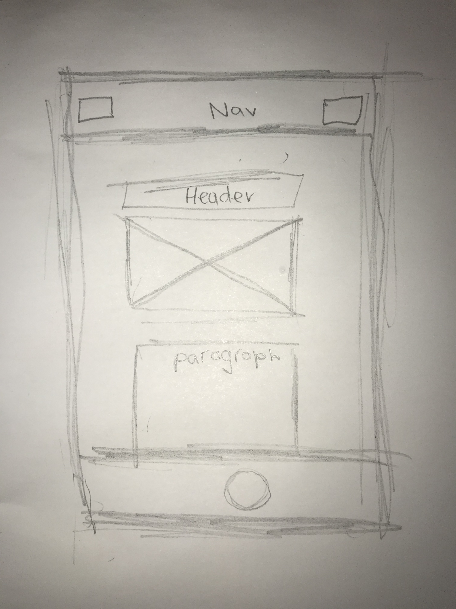
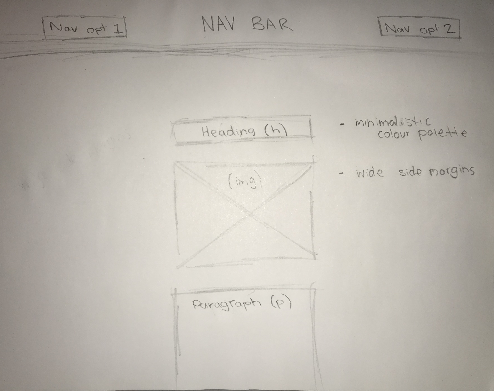

Accessibility
While designing the web pages for thrift online store, I took certain steps to ensure the website was acessible for people with different disabilities including eye sight complications. To do this, I kept the colour to a minimal and ensured that there was a strong contrast with the content on the pages so information could be easily read. I also ensured that the text was a large font size making it easier to read. For someone that is completely blind and requires a voice reader, I added detailed references to images and content so that they can have a clear picture of the visual elements with assitance from a screen reader. I also considered the ordering of my elements were appropriate so that the web page can be navigated using the tab key rather than having to rely on the small cursor. In future, I could look at considering colour blindness into my web page more by maybe having an optional dark mode or certain modes which are better suited to people who are colour blind.
Responsive Design: Mobile Wireframes
This week I have been learning to build responsive web pages which are mobile friendly using flexbox and @media conditions.
Why is git so useful?
Git can be a useful tool for designers in many environments and circumstances. Firstly, Git is a distributed version-control system code. Therefore, it allows you store and work on multiple versions of the same code, creating security and flexibility when working on code. Git tackles the problem of editing your code to a point of error without reverse. Instead, git tracks and saves stages of your code base, allowing you to access history of the code and easily go back on undesired changes. Therefore, the editing of codebases is much less risky when using git. This feature would be a huge benefit to a group of designers wanting to create a short-notice website redesign prototype as it would allow them to work freely, with the ability to make changes which can easily be managed and reversed. Git also allows for branching capabilities when working towards a master code. Therefore, several branches can be made to work on the code, while the master code remains live and running. This would allow the team to work on the website, while keeping the existing website up and running while these changes are being made. Git also allows a group of people to work together in an organized and collaborative way which is highly useful in a group situation.
Wireframes
Before I looked at any elements of coding, I began the process by roughly sketching out wireframe concepts for the blog, which were very basic but easy to comprehend. This served as a visual guide to assist in creating the blog. When designing the look of my blog, I wanted to create something that looked very minimal and clean. I knew I wanted alot of whitespace to so and therefore I designed around using wide margins for the content. I also wanted to keep the colours very minimal and tidy.